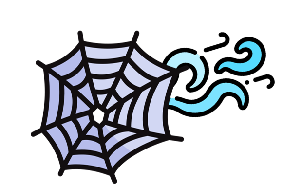

WebSpline
WebSplineWe evaluate WebSpline on two widely used monocular video benchmarks: the iPhone and NVIDIA datasets. These visual comparisons demonstrate that our method produces novel view renderings with clearer boundaries and sharper details of dynamic objects compared to state-of-the-art approaches.
TL;DR: We propose WebSpline, a novel dynamic 3D Gaussian framework that couples a Structure-Informed Spline (SIS) representation with a Structural Proxy Graph (SPG), achieving state-of-the-art reconstruction quality from monocular videos while rendering over 10× faster than the second-best method on the iPhone dataset.
Overview of WebSpline. WebSpline models each dynamic Gaussian trajectory using the Structure-Informed Spline (SIS) representation, initialized from the Structural Proxy Graph (SPG). For SIS optimization, we define two types of neighborhoods for each dynamic Gaussian, spatial and structural, to enforce coherent spline motion while capturing fine-grained dynamics.